Hochzeits-Ratgeber
Praktisches Wissen für eure Hochzeit an der Ostsee – von Leuten, die hier Hochzeiten begleiten.
Ort, Location und Unterkunft an der Ostsee

Heiraten auf Rügen
Standesamtliche Trauorte, Ablauf der Anmeldung, beste Jahreszeit und Tipps für Gäste von außerhalb.
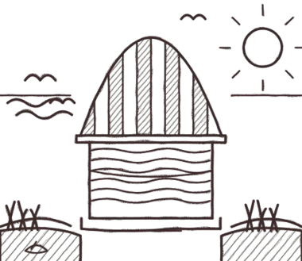
Strandhochzeit in Mecklenburg-Vorpommern
Standesamtlich oder frei am Strand? Was geht, was ihr klären müsst und wie ihr euch gegen Wind und Wetter absichert.
Hochzeitslocations Rügen & Ostsee
Arten von Locations, Fragen an den Gastgeber und Plan B bei Wetter.
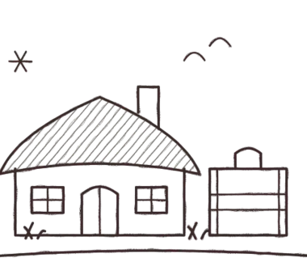
Unterkünfte für Hochzeitsgäste auf Rügen
Wann Gäste buchen sollten, welche Unterkunftsarten passen und was ins Infoblatt gehört.

Heiraten auf Usedom
Kaiserbäder, Seebrücken, Strand und Haff: Was Usedom für Hochzeiten bietet.

Heiraten auf dem Darß
Darßer Wald, Weststrand, Reetdachhäuser und Naturschutz: Tipps für die Hochzeit.

Heiraten in Stralsund
Altstadt, Hafen und Backsteingiebel: Orte und Tipps für eure Hochzeit in Stralsund.
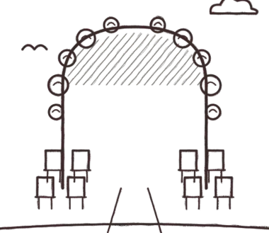
Freie Trauung in Mecklenburg-Vorpommern
Ablauf, Trauredner, Orte, Erlaubnis und Wetter-Plan für die freie Trauung.
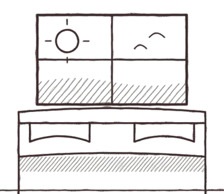
Hochzeitsnacht im Hotel auf Rügen
Zimmer mit Meerblick, früh buchen, Frühstück und Überraschungen für die Hochzeitsnacht.
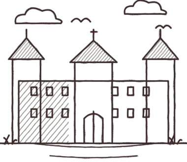
Heiraten im Schloss Ralswiek
Schloss, Park und Bodden: Fotospots, Zeitplan und Tipps für Ralswiek.
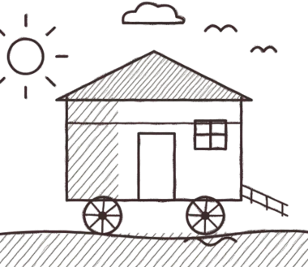
Hochzeit am Badekarren in Binz
Kleine Strandhochzeit in Binz: Fotoideen, Wetter und Zeitplan.
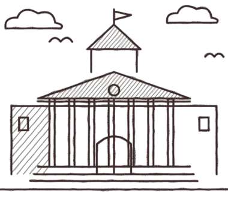
Heiraten im Kurhaus Binz
Säulen, Promenade und Meer: Fotospots und Zeitplan in Binz.
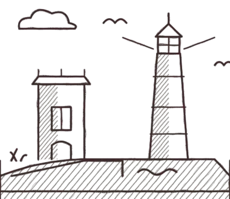
Heiraten am Kap Arkona
Leuchttürme, Klippen und Weite: Fotoideen und Planung am nördlichsten Punkt.
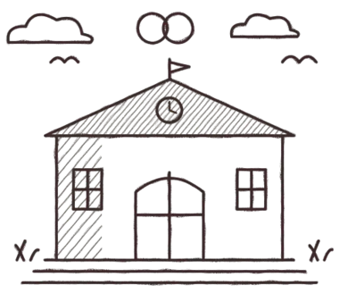
Standesämter auf Rügen
Anmeldung, Unterlagen, Trauorte und Fotos nach der Trauung.
Hochzeit am Vju Hotel in Göhren
Strand und Meerblick in Göhren: Fotoideen und Zeitplan.
Heiraten in Sellin an der Seebrücke
Seebrücke, Strand und Villen: Fotospots und Zeitplan in Sellin.
Hochzeitsfotos in Stralsund: Hafen und Altstadt
Hafen, Giebelhäuser und Gassen: Fotospots in der Hansestadt.
Heiraten im Jagdschloss Granitz
Turm, Wald und Aussicht: Fotoideen für das Jagdschloss Granitz.
Heiraten in Putbus: Circus und Schlosspark
Circus, Obelisk und Park: Hochzeitsfotos in der weißen Stadt.
Heiraten im Schloss Ranzow bei Lohme
Gutshaus, Park und Weite: Fotoideen für Schloss Ranzow.
Hochzeitsfotos an Königsstuhl und Kreidefelsen
Kreide, Buchenwald und Meer: Fotos im Nationalpark Jasmund.
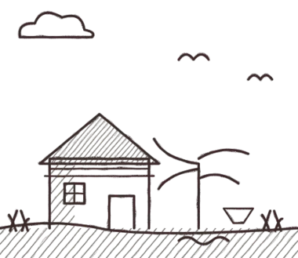
Heiraten auf Hiddensee
Fähre, Dünen und Reetdach: Planung und Fotos auf Hiddensee.
Hochzeitsfotos in Prora
Langer Strand und Architektur: Hochzeitsfotos in Prora.
Planung, Zeitplan und Papierkram
Kosten einer Hochzeit in MV
Welche Posten anfallen und wie ihr euer Budget plant.
Verlobung planen
Antrag, Ring, Verlobungsfeier und -shooting: der Weg zur Hochzeit.
Hochzeit 2027: Zeitplan
Von Datum und Location bis zum Feinschliff: der Plan für alle, die 2027 heiraten.
Save-the-Date & Einladung
Wann sie rausgehen, was hineingehört und wie ihr Antworten einsammelt.
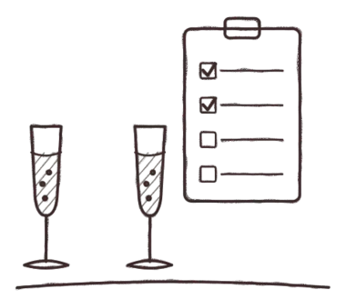
Trauzeugen: Aufgaben
Aufgaben vor und am Hochzeitstag und was rechtlich gilt.
Hochzeitsrede: Tipps
Aufbau, Länge, Humor und Tipps zum Vortragen.
Standesamt: Unterlagen
Welche Papiere meist gebraucht werden und worauf ihr beim Termin achten solltet.
Sitzordnung: Tipps
Tischformen, Brauttisch, Kinder, Singles und Konflikte: So gelingt der Sitzplan.
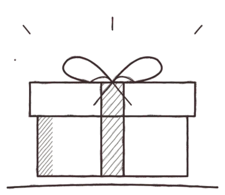
Hochzeitsgeschenke & Wunschliste
Wunschliste, Geldgeschenk, Spendenwunsch und freundliche Formulierungen.
Flitterwochen: Budget & Planung
Budget, Zeitpunkt, Dokumente und Finanzierung für die Reise nach der Hochzeit.
Fotos und Styling
Hochzeitsfotograf finden – 10 Fragen
Stil, Ablauf, Vertrag und Lieferzeit vor der Buchung klären.
Brautstyling-Probe
Termin, Mitbringliste, Fragen und der Plan für den Hochzeitstag.
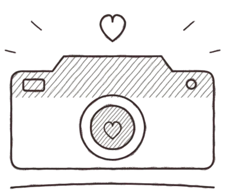
Hochzeitsfotos: Tipps für Paare
Zeitplan, Licht, Gruppenfotos und natürliche Posen für schöne Hochzeitsbilder.
Winterhochzeit
Heiraten im Winter an der Ostsee
Licht, Kälte, Kleidung und Plan B für die Winterhochzeit.
Winterhochzeit: Outfit
Brautmantel, Stola, warme Schuhe und der passende Anzug für die kalte Jahreszeit.
Silvesterhochzeit
Ablauf vom Ja-Wort bis Mitternacht, Gästeplanung, Feuerwerk und Fotos.
Winterhochzeit Deko & Licht
Kerzen, Lichterketten und Laternen: Deko-Ideen mit Sicherheitstipps.
Heiraten an Weihnachten
Termine, Gäste, Kosten und Deko für eine Hochzeit zu Weihnachten.
Winter-Fotospots auf Rügen
Kreideküste, Kap Arkona, Strand und Wald: Orte, Licht und Regeln für Winterfotos.
Brautstrauß im Winter
Blumen, Zweige und Farben für den Winterstrauß – und wie er bei Kälte frisch bleibt.
Winterhochzeit: Menü & Getränke
Wintermenü, Glühwein-Empfang, Punsch und Mengenplanung für kalte Tage.
Winterhochzeit: Zeitplan & Tageslicht
Sonnenuntergang, Trauung am Mittag und Paarfotos im Licht: der Plan für kurze Tage.
Kostenloser Hochzeitsplaner als PDF
Budget, Gästeliste, Checkliste und Tagesablauf zum Ausdrucken.
PDF herunterladen